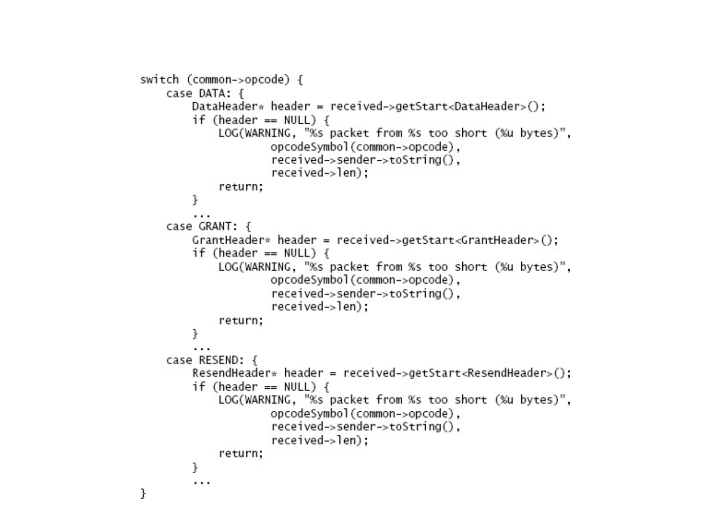
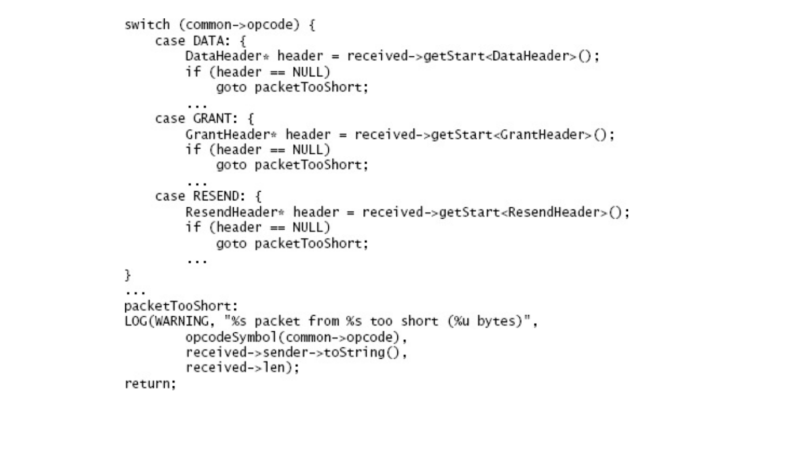
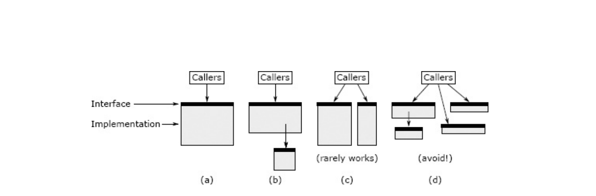

第九章 在一起更好还是分开更好？
软件设计中最基本的问题之一是：给定两个功能，它们应该在同一位置一起实现，还是应该分开实现？这个问题适用于系统中的所有级别，例如功能，方法，类和服务。例如，应该在提供面向流的文件 I/O 的类中包括缓冲，还是应该在单独的类中？HTTP 请求的解析应该完全在一种方法中实现，还是应该在多个方法（甚至多个类）之间划分？本章讨论做出这些决定时要考虑的因素。这些因素中的一些已经在前面的章节中进行了讨论，但是为了完整起见，这里将对其进行重新讨论。
在决定是合并还是分开时，目标是降低整个系统的复杂性并改善其模块化。看来实现此目标的最佳方法是将系统划分为大量的小组件：组件越小，每个单独的组件可能越简单。但是，细分的行为会带来额外的复杂性，而这在细分之前是不存在的：
- 一些组件的复杂性仅来自组件的数量：组件越多，就越难以追踪所有组件，也就越难在大型集合中找到所需的组件。细分通常会导致更多接口，并且每个新接口都会增加复杂性。
- 细分可能会导致附加代码来管理组件。例如，在细分之前使用单个对象的一段代码现在可能必须管理多个对象。
- 细分产生分离：细分后的组件将比细分前的组件相距更远。例如，在细分之前位于单个类中的方法可能在细分之后位于不同的类中，并且可能在不同的文件中。分离使开发人员更难于同时查看这些组件，甚至很难知道它们的存在。如果组件真正独立，那么分离是好的：它使开发人员可以一次专注于单个组件，而不会被其他组件分散注意力。另一方面，如果组件之间存在依赖性，则分离是不好的：开发人员最终将在组件之间来回翻转。更糟糕的是，他们可能不了解依赖关系，这可能导致错误。
- 细分可能导致重复：细分之前的单个实例中存在的代码可能需要存在于每个细分的组件中。
如果它们紧密相关，则将代码段组合在一起是最有益的。如果各部分无关，则最好分开。以下是两个代码相关的一些提示：
- 他们共享信息；例如，这两段代码都可能取决于特定类型文档的语法。
- 它们一起使用：任何使用其中一段代码的人都可能同时使用另一段代码。这种关系形式只有在双向关系中才具有吸引力。作为反例，磁盘块高速缓存几乎总是包含哈希表，但是哈希表可以在许多不涉及块高速缓存的情况下使用。因此，这些模块应该分开。
- 它们在概念上重叠，因为存在一个简单的更高级别的类别，其中包括这两段代码。例如，搜索子字符串和大小写转换都属于字符串操作类别。流控制和可靠的交付都属于网络通信的范畴。
- 不看其中的一段代码就很难理解。
本章的其余部分使用更具体的规则以及示例来说明何时将代码段组合在一起以及何时将它们分开是有意义的。
9.1 Bring together if information is shared 如果信息共享则汇聚在一起
5.4 节在实现 HTTP 服务器的项目上下文中介绍了此原理。在其第一个实现中，该项目在不同的类中使用了两种不同的方法来读取和解析 HTTP 请求。第一种方法从网络套接字读取传入请求的文本，并将其放置在字符串对象中。第二种方法解析字符串以提取请求的各个组成部分。经过这种分解，这两种方法最终都对 HTTP 请求的格式有了相当的了解：第一种方法只是尝试读取请求，而不是解析请求，但是如果不执行大多数操作，就无法确定请求的结束解析它的工作（例如，它必须解析标头行才能识别包含整个请求长度的标头）。由于此共享信息，最好在同一位置读取和解析请求；当两个类合而为一时，代码变得更短，更简单。
9.2 Bring together if it will simplify the interface 汇集在一起 是否可以简化接口
当两个或多个模块组合成一个模块时，可以为新模块定义一个比原始接口更简单或更易于使用的接口。当原始模块各自实现问题解决方案的一部分时，通常会发生这种情况。在上一部分的 HTTP 服务器示例中，原始方法需要一个接口来从第一个方法返回 HTTP 请求字符串并将其传递给第二个方法。当这些方法结合在一起时，这些接口就被淘汰了。
另外，将两个或更多类的功能组合在一起时，可能会自动执行某些功能，因此大多数用户无需了解它们。Java I/O 库说明了这种机会。如果将 FileInputStream 和 BufferedInputStream 类组合在一起，并且默认情况下提供了缓冲，则绝大多数用户甚至都不需要知道缓冲的存在。组合的 FileInputStream 类可能提供禁用或替换默认缓冲机制的方法，但是大多数用户不需要了解它们。
9.3 Bring together to eliminate duplication 消除重复
如果发现反复重复相同的代码模式，请查看是否可以重新组织代码以消除重复。一种方法是将重复的代码分解为一个单独的方法，并用对该方法的调用替换重复的代码段。如果重复的代码段很长并且替换方法具有简单的签名，则此方法最有效。如果代码段只有一两行，那么用方法调用替换它可能不会有太多好处。如果代码段与其环境以复杂的方式进行交互（例如，通过访问多个局部变量），则替换方法可能需要复杂的签名（例如，许多“按引用传递”参数），这会降低其价值。
消除重复的另一种方法是重构代码，使相关代码段仅需要在一个地方执行。假设您正在编写一种方法，该方法需要在几个不同的点返回错误，并且在返回之前需要在每个这些点执行相同的清除操作（示例请参见图 9.1）。如果编程语言支持 goto，则可以将清除代码移到方法的最后，然后在需要返回错误的每个点处转到该片段，如图 9.2 所示。Goto 语句通常被认为是一个坏主意，如果不加选择地使用它们，可能会导致无法识别的代码，但是在诸如此类的情况下，它们可用于从嵌套代码中转义，因此它们非常有用。
9.4 Separate general-purpose and special-purpose code 单独的通用代码和专用代码
如果模块包含可用于多种不同目的的机制，则它应仅提供一种通用机制。它不应包含专门针对特定用途的机制的代码，也不应包含其他通用机制。与通用机制关联的专用代码通常应放在不同的模块中（通常是与特定用途关联的模块）。第 6 章中的 GUI 编辑器讨论阐明了这一原理：最佳设计是文本类提供通用文本操作，而特定于用户界面的操作（例如删除所选内容）则在用户界面模块中实现。
如果相同的代码（或几乎相同的代码）一遍又一遍地出现，那是一个危险信号，您没有找到正确的抽象。

图 9.1：此代码处理不同类型的传入网络数据包。对于每种类型，如果数据包对于该类型而言太短，则会记录一条消息。在此版本的代码中，LOG 语句对于几种不同的数据包类型是重复的。

图 9.2：对图 9.1 中的代码进行了重新组织，因此只有 LOG 语句的一个副本。
通常，系统的下层倾向于更通用，而上层则更专用。例如，应用程序的最顶层包含完全特定于该应用程序的功能。将专用代码与通用代码分开的方法是将专用代码向上拉到较高的层，而将较低的层保留为通用。当您遇到同时包含通用功能和专用功能的同一类的类时，请查看该类是否可以分为两个类，一个包含通用功能，另一个在其上分层以提供特殊功能
9.5 Example: insertion cursor and selection 示例：插入光标和选择
下一节将通过三个示例说明上述原理。在两个示例中，最好的方法是分离相关的代码段。在第三个示例中，最好将它们结合在一起。
第一个示例由插入光标和第 6 章的 GUI 编辑器项目中的选择组成。编辑器显示闪烁的垂直线，指示用户键入的文本将出现在文档中的何处。它还显示了一个突出显示的字符范围，称为选择，用于复制或删除文本。插入光标始终可见，但是有时可能没有选择文本。如果存在选择，则插入光标始终位于其一端。
选择和插入光标在某些方面相关。例如，光标始终位于所选内容的一端，并且倾向于将光标和所选内容一起操作：单击并拖动鼠标将它们都设置，然后插入文本会首先删除所选的文本（如果有），然后在光标位置插入新文本。因此，使用单个对象管理选择和光标似乎合乎逻辑，并且一个项目团队采用了这种方法。该对象在文件中存储了两个位置，以及布尔值，它们指示光标的哪一端以及选择是否存在。
但是，合并的对象很尴尬。它对高级代码没有任何好处，因为高级代码仍然需要将选择和游标视为不同的实体，并且对它们进行单独操作（在插入文本期间，它首先在组合对象上调用一个方法来删除选定的文本；然后调用另一个方法来检索光标位置，以插入新文本）。实际上，组合对象比单独的对象实现起来要复杂得多。它避免了将光标位置存储为单独的实体，而是不得不存储一个布尔值，该布尔值指示选择的哪一端是光标。为了检索光标位置，组合对象必须首先测试布尔值，然后选择选择的适当结尾。
当通用机制还包含专门用于该机制的特定用途的代码时，就会出现此红色标志。这使该机制更加复杂，并在该机制与特定用例之间造成了信息泄漏：对用例的未来修改也可能需要对基础机制进行更改。
在这种情况下，选择和光标之间的关联度不足以将它们组合在一起。当修改代码以分隔选择和光标时，用法和实现都变得更加简单。与必须从中提取选择和光标信息的组合对象相比，单独的对象提供了更简单的接口。游标的实现也变得更加简单，因为游标的位置是直接表示的，而不是通过选择和布尔值间接表示的。实际上，在修订版中，没有特殊的类用于选择或游标。相反，引入了一个新的 Position 类来表示文件中的位置（行号和行内的字符）。选择用两个位置表示，光标用一个位置表示。职位还在项目中找到了其他用途。
9.6 Example: separate class for logging 示例：用于记录的单独类
第二个示例涉及学生项目中的错误记录。一个类包含几个代码序列，如下所示：
try {
rpcConn = connectionPool.getConnection(dest);
} catch (IOException e) {
NetworkErrorLogger.logRpcOpenError(req, dest, e);
return null;
}
而不是在检测到错误时记录错误，而是调用特殊错误记录类中的单独方法。错误记录类是在同一源文件的末尾定义的：
private static class NetworkErrorLogger {
/**
* Output information relevant to an error that occurs when trying
* to open a connection to send an RPC.
*
* @param req
* The RPC request that would have been sent through the connection
* @param dest
* The destination of the RPC
* @param e
* The caught error
*/
public static void logRpcOpenError(RpcRequest req, AddrPortTuple dest, Exception e) {
logger.log(Level.WARNING, "Cannot send message: " + req + ". \n" + "Unable to find or open connection to " + dest + " :" + e);
}
...
}
NetworkErrorLogger 类包含几个方法，例如 logRpcSendError 和 logRpcReceiveError，每个方法都记录了不同类型的错误。
这种分离增加了复杂性，没有任何好处。日志记录方法很浅：大多数只包含一行代码，但是它们需要大量的文档。每个方法仅在单个位置调用。日志记录方法高度依赖于它们的调用：读取调用的人很可能会切换到日志记录方法，以确保记录了正确的信息。同样，阅读日志记录方法的人可能会转到调用站点以了解该方法的目的。
在此示例中，最好消除日志记录方法，并将日志记录语句放置在检测到错误的位置。这将使代码更易于阅读，并消除了日志记录方法所需的接口。
9.7 Example: editor undo mechanism 示例：编辑器撤消机制
在 6.2 节的 GUI 编辑器项目中，要求之一是支持多级撤消/重做，不仅要更改文本本身，还要更改选择，插入光标和视图。例如，如果用户选择了一些文本，将其删除，滚动到文件中的其他位置，然后调用 undo，则编辑器必须将其状态恢复为删除前的状态。这包括还原已删除的文本，再次选择它，并使所选的文本在窗口中可见。
一些学生项目将整个撤消机制实现为文本类的一部分。文本类维护所有可撤消更改的列表。每当更改文本时，它将自动将条目添加到此列表中。为了更改选择，插入光标和视图，用户界面代码调用了文本类中的其他方法，然后将这些更改的条目添加到撤消列表中。当用户请求撤消或重做时，用户界面代码将调用文本类中的方法，该方法然后处理撤消列表中的条目。对于与文本相关的条目，它更新了文本类的内部。对于与其他事物（例如选择）相关的条目，将调用返回到用户界面代码的文本类来执行撤消或重做。
这种方法在文本类中导致了一系列尴尬的功能。撤消/重做的核心由通用机制组成，用于管理已执行的动作列表，并在撤消和重做操作期间逐步执行这些动作。核心与专用处理程序一起位于 text 类中，该专用处理程序对诸如文本和选择之类的特定内容实现了撤消和重做。用于选择和光标的专用撤消处理程序与文本类中的任何其他内容均无关。它们导致文本类和用户界面之间的信息泄漏，以及每个模块中来回传递撤消信息的额外方法。如果将来将新的可撤消实体添加到系统中，则将需要更改文本类，包括特定于该实体的新方法。
通过提取撤消/重做机制的通用核心并将其放在单独的类中，可以解决这些问题：
public class History {
public interface Action {
public void redo();
public void undo();
}
History() {...}
void addAction(Action action) {...}
void addFence() {...}
void undo() {...}
void redo() {...}
}
在此设计中，History 类管理实现接口 History.Action 的对象的集合。每个 History.Action 描述一个操作，例如插入文本或更改光标位置，并且它提供了可以撤消或重做该操作的方法。History 类对操作中存储的信息或它们如何实现其撤消和重做方法一无所知。历史记录维护一个历史记录列表，该列表描述了应用程序整个生命周期中执行的所有操作，并且它提供了撤消和重做方法，以响应用户请求的撤消和重做而在列表中前后移动，并在应用程序中调用撤消和重做方法。历史动作。
History.Actions are special-purpose objects: each one understands a particular kind of undoable operation. They are implemented outside the History class, in modules that understand particular kinds of undoable actions. The text class might implement UndoableInsert and UndoableDelete objects to describe text insertions and deletions. Whenever it inserts text, the text class creates a new UndoableInsert object describing the insertion and invokes History.addAction to add it to the history list. The editor’s user interface code might create UndoableSelection and UndoableCursor objects that describe changes to the selection and insertion cursor.
历史。动作是特殊目的的对象：每个人都了解一种特殊的不可操作。它们在 History 类之外的模块中实现，这些模块可以理解特定类型的可撤销操作。文本类可能实现 UndoableInsert 和 UndoableDelete 对象，以描述文本的插入和删除。每当插入文本时，文本类都会创建一个描述该插入的新 UndoableInsert 对象，并调用 History.addAction 将其添加到历史列表中。编辑器的用户界面代码可能会创建 UndoableSelection 和 UndoableCursor 对象，这些对象描述对选择和插入光标的更改。
The History class also allows actions to be grouped so that, for example, a single undo request from the user can restore deleted text, reselect the deleted text, and reposition the insertion cursor. There are a number of ways to group actions; the History class uses fences, which are markers placed in the history list to separate groups of related actions. Each call to History.redo walks backwards through the history list, undoing actions until it reaches the next fence. The placement of fences is determined by higher-level code by invoking History.addFence.
History 类还允许对操作进行分组，例如，来自用户的单个撤消请求可以恢复已删除的文本，重新选择已删除的文本以及重新放置插入光标。有多种将动作分组的方法。历史记录类使用围栏，围栏是放置在历史记录列表中的标记，用于分隔相关动作的组。每次对 History.redo 的调用都会向后浏览历史记录列表，撤消操作，直到到达下一个栅栏。围栏的位置由更高级别的代码通过调用 History.addFence 确定。
This approach divides the functionality of undo into three categories, each of which is implemented in a different place:
这种方法将撤消功能分为三类，每类都在不同的地方实现：
A general-purpose mechanism for managing and grouping actions and invoking undo/redo operations (implemented by the History class). The specifics of particular actions (implemented by a variety of classes, each of which understands a small number of action types). The policy for grouping actions (implemented by high-level user interface code to provide the right overall application behavior). Each of these categories can be implemented without any understanding of the other categories. The History class does not know what kind of actions are being undone; it could be used in a variety of applications. Each action class understands only a single kind of action, and neither the History class nor the action classes needs to be aware of the policy for grouping actions.
一种用于管理和分组动作以及调用撤消/重做操作的通用机制（由 History 类实现）。特定操作的细节（由各种类实现，每个类都了解少量的操作类型）。分组操作的策略（由高级用户界面代码实现，以提供正确的整体应用程序行为）。这些类别中的每一个都可以在不了解其他类别的情况下实施。历史课不知道要撤消哪种操作；它可以用于多种应用。每个动作类仅理解一种动作，并且历史记录类和动作类都不需要知道将动作分组的策略。
The key design decision was the one that separated the general-purpose part of the undo mechanism from the special-purpose parts and put the general-purpose part in a class by itself. Once that was done, the rest of the design fell out naturally.
关键的设计决策是将撤消机制的通用部分与专用部分分开，然后将通用部分单独放在一个类中的决定。一旦完成，其余的设计就会自然消失。
Note: the suggestion to separate general-purpose code from special-purpose code refers to code related to a particular mechanism. For example, special-purpose undo code (such as code to undo a text insertion) should be separated from general-purpose undo code (such as code to manage the history list). However, it often makes sense to combine special-purpose code for one mechanism with general-purpose code for another. The text class is an example of this: it implements a general-purpose mechanism for managing text, but it includes special-purpose code related to undoing. The undo code is special-purpose because it only handles undo operations for text modifications. It doesn’t make sense to combine this code with the general-purpose undo infrastructure in the History class, but it does make sense to put it in the text class, since it is closely related to other text functions.
注意:将通用代码与专用代码分离的建议是指与特定机制相关的代码。例如，特殊用途的撤消代码(例如撤消文本插入的代码)应该与通用用途的撤消代码(例如管理历史记录列表的代码)分开。然而，将一种机制的专用代码与另一种机制的通用代码组合起来通常是有意义的。text 类就是这样一个例子:它实现了一种管理文本的通用机制，但是它包含了与撤销相关的专用代码。撤消代码是专用的，因为它只处理文本修改的撤消操作。将这段代码与 History 类中通用的 undo 基础结构结合在一起是没有意义的，但是将它放在 text 类中是有意义的，因为它与其他文本函数密切相关。
9.8 Splitting and joining methods 拆分和合并方法
The issue of when to subdivide applies not just to classes, but also to methods: are there times when it is better to divide an existing method into multiple smaller methods? Or, should two smaller methods be combined into one larger one? Long methods tend to be more difficult to understand than shorter ones, so many people argue that length alone is a good justification for breaking up a method. Students in classes are often given rigid criteria, such as “Split up any method longer than 20 lines!”
何时细分的问题不仅适用于类，而且还适用于方法：是否有时最好将现有方法分为多个较小的方法？还是应该将两种较小的方法合并为一种较大的方法？长方法比短方法更难于理解，因此许多人认为仅长度是分解方法的一个很好的理由。课堂上的学生通常会获得严格的标准，例如“拆分超过 20 行的任何方法！”
However, length by itself is rarely a good reason for splitting up a method. In general, developers tend to break up methods too much. Splitting up a method introduces additional interfaces, which add to complexity. It also separates the pieces of the original method, which makes the code harder to read if the pieces are actually related. You shouldn’t break up a method unless it makes the overall system simpler; I’ll discuss how this might happen below.
但是，长度本身很少是拆分方法的一个很好的理由。通常，开发人员倾向于过多地分解方法。拆分方法会引入其他接口，从而增加了复杂性。它还将原始方法的各个部分分开，如果这些部分实际上是相关的，则使代码更难阅读。您不应该分解一种方法，除非它使整个系统更加简单；我将在下面讨论这种情况。
Long methods aren’t always bad. For example, suppose a method contains five 20-line blocks of code that are executed in order. If the blocks are relatively independent, then the method can be read and understood one block at a time; there’s not much benefit in moving each of the blocks into a separate method. If the blocks have complex interactions, it’s even more important to keep them together so readers can see all of the code at once; if each block is in a separate method, readers will have to flip back and forth between these spread-out methods in order to understand how they work together. Methods containing hundreds of lines of code are fine if they have a simple signature and are easy to read. These methods are deep (lots of functionality, simple interface), which is good.
长方法并不总是坏的。例如，假设一个方法包含按顺序执行的五个 20 行代码块。如果这些块是相对独立的，则可以一次读取并理解该方法的一个块。将每个块移动到单独的方法中并没有太大的好处。如果这些块具有复杂的交互作用，则将它们保持在一起就显得尤为重要，这样读者就可以一次看到所有代码。如果每个块使用单独的方法，则读者将不得不在这些扩展方法之间来回切换，以了解它们如何协同工作。如果方法具有简单的签名并且易于阅读，则包含数百行代码的方法就可以了。这些方法很深入（很多功能，简单的接口），很好。

Figure 9.3: A method (a) can be split either by by extracting a subtask (b) or by dividing its functionality into two separate methods (c). A method should not be split if it results in shallow methods, as in (d).
图 9.3：方法（a）可以通过提取子任务（b）或将其功能划分为两个单独的方法（c）进行拆分。如果方法导致浅层方法，则不应拆分该方法，如（d）所示。
When designing methods, the most important goal is to provide clean and simple abstractions. Each method should do one thing and do it completely. The method should have a clean and simple interface, so that users don’t need to have much information in their heads in order to use it correctly. The method should be deep: its interface should be much simpler than its implementation. If a method has all of these properties, then it probably doesn’t matter whether it is long or not.
设计方法时，最重要的目标是提供简洁的抽象。每种方法都应该做一件事并且完全做到这一点。该方法应该具有简洁的接口，以便用户无需费神就可以正确使用它。该方法应该很深：其接口应该比其实现简单得多。如果一个方法具有所有这些属性，那么它的长短与否可能无关紧要。
Splitting up a method only makes sense if it results in cleaner abstractions, overall. There are two ways to do this, which are diagrammed in Figure 9.3. The best way is by factoring out a subtask into a separate method, as shown in Figure 9.3(b). The subdivision results in a child method containing the subtask and a parent method containing the remainder of the original method; the parent invokes the child. The interface of the new parent method is the same as the original method. This form of subdivision makes sense if there is a subtask that is cleanly separable from the rest of the original method, which means (a) someone reading the child method doesn’t need to know anything about the parent method and (b) someone reading the parent method doesn’t need to understand the implementation of the child method. Typically this means that the child method is relatively general-purpose: it could conceivably be used by other methods besides the parent. If you make a split of this form and then find yourself flipping back and forth between the parent and child to understand how they work together, that is a red flag (“Conjoined Methods”) indicating that the split was probably a bad idea.
总体而言，拆分方法只有在其导致更抽象的抽象时才有意义。有两种方法可以做到这一点，如图 9.3 所示。最佳方法是将子任务分解为单独的方法，如图 9.3（b）所示。该细分产生一个包含该子任务的子方法和一个包含原始方法其余部分的父方法；父级调用子级。新的父方法的接口与原始方法的接口相同。如果存在一个与原始方法的其余部分完全可分离的子任务，则这种细分形式是有意义的，这意味着（a）读取子方法的某人不需要了解有关父方法的任何信息，以及（b）某人在阅读父方法不需要了解子方法的实现。通常，这意味着子方法是相对通用的：可以想象除父方法外，其他方法也可以使用它。如果您对这种形式进行拆分，然后发现自己在父母和孩子之间来回翻转以了解他们如何一起工作，那是一个红色标记（“联合方法”），表明拆分可能不是一个好主意。
The second way to break up a method is to split it into two separate methods, each visible to callers of the original method, as in Figure 9.3(c). This makes sense if the original method had an overly complex interface because it tried to do multiple things that were not closely related. If this is the case, it may be possible to divide the method’s functionality into two or more smaller methods, each of which has only a part of the original method’s functionality. If you make a split like this, the interface for each of the resulting methods should be simpler than the interface of the original method. Ideally, most callers should only need to invoke one of the two new methods; if callers must invoke both of the new methods, then that adds complexity, which makes it less likely that the split is a good idea. The new methods will be more focused in what they do. It is a good sign if the new methods are more general-purpose than the original method (i.e., you can imagine using them separately in other situations).
分解方法的第二种方法是将其拆分为两个单独的方法，每个方法对原始方法的调用者可见，如图 9.3（c）所示。如果原始方法的接口过于复杂，这是有道理的，因为该接口试图执行不密切相关的多项操作。在这种情况下，可以将方法的功能划分为两个或更多个较小的方法，每个方法仅具有原始方法功能的一部分。如果进行这样的拆分，则每个结果方法的接口应该比原始方法的接口更简单。理想情况下，大多数调用者只需要调用两个新方法之一即可；如果调用者必须同时调用这两个新方法，则将增加复杂性，从而降低拆分是个好主意的可能性。新方法将更加专注于它们的工作。如果新方法比原始方法更具通用性，那么这是一个好兆头（例如，您可以想象在其他情况下单独使用它们）。
Splits of the form shown in Figure 9.3(c) don’t make sense very often, because they result in callers having to deal with multiple methods instead of one. When you split this way, you run the risk of ending up with several shallow methods, as in Figure 9.3(d). If the caller has to invoke each of the separate methods, passing state back and forth between them, then splitting is not a good idea. If you’re considering a split like the one in Figure 9.3(c), you should judge it based on whether it simplifies things for callers.
图 9.3（c）所示形式的拆分并不是很有意义，因为它们导致调用者不得不处理多个方法而不是一个方法。当您以这种方式拆分时，您可能会遇到几种浅层方法的风险，如图 9.3（d）所示。如果调用者必须调用每个单独的方法，并在它们之间来回传递状态，则拆分不是一个好主意。如果您正在考虑像图 9.3（c）所示的拆分，则应基于它是否简化了呼叫者的情况来进行判断。
There are also situations where a system can be made simpler by joining methods together. For example, joining methods might replace two shallow methods with one deeper method; it might eliminate duplication of code; it might eliminate dependencies between the original methods, or intermediate data structures; it might result in better encapsulation, so that knowledge that was previously present in multiple places is now isolated in a single place; or it might result in a simpler interface, as discussed in Section 9.2.
在某些情况下，通过将方法结合在一起可以简化系统。例如，连接方法可以用一种更深的方法代替两种浅的方法。它可以消除重复的代码；它可以消除原始方法或中间数据结构之间的依赖关系；它可能导致更好的封装，从而使以前在多个位置存在的知识现在被隔离在一个位置；否则可能会导致接口更简单，如 9.2 节所述。
img Red Flag: Conjoined Methods img
It should be possible to understand each method independently. If you can’t understand the implementation of one method without also understanding the implementation of another, that’s a red flag. This red flag can occur in other contexts as well: if two pieces of code are physically separated, but each can only be understood by looking at the other, that is a red flag.
应该有可能独立地理解每种方法。如果您不能不理解另一种方法的实现而无法理解一种方法的实现，那就是一个危险信号。该危险信号也可以在其他情况下发生：如果两段代码在物理上是分开的，但是只有通过查看另一段代码才能理解它们，这就是危险信号。
9.9 Conclusion 结论
The decision to split or join modules should be based on complexity. Pick the structure that results in the best information hiding, the fewest dependencies, and the deepest interfaces.
拆分或加入模块的决定应基于复杂性。选择一种结构，它可以隐藏最佳的信息，最少的依赖关系和最深的接口。